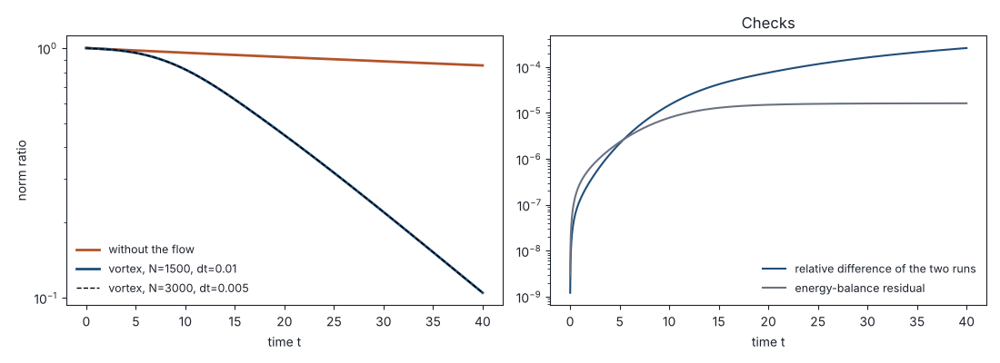

Numerical methods
Every computed picture and video of this wiki has a record on this page: what was computed, how, with which parameters and checks, and the code that produced it.
How a record works
- A record is a section with an anchor
num-…; the picture or video links to it with the parameterrecordof Media. - It gives the equation, the parameters, the method, the checks, the code and how to run it, and its status.
- The code is in the folder
numerics/of the repository of the wiki, one folder per record, with the output of its checks.
Records
Heat versus shear on the torus
Produces the video on the Overview (heat-vs-shear.mp4) and the check figure below
Equation \(\partial_t f+\sin y\,\partial_x f=\nu\Delta f\) on \([0,2\pi)^2\), periodic, and the heat equation \(\partial_t f=\nu\Delta f\); same datum \(f_0=\cos x\)
Parameters \(\nu=10^{-3}\), times \(0\le t\le 100\); video of 20 s at 24 frames per second, time running uniformly (5 time units per second), last frame held 1.5 s
Method one Fourier mode in \(x\): \(f=\operatorname{Re}(g(t,y)e^{ix})\) with \(\partial_t g=-i\sin y\,g+\nu(\partial_y^2-1)g\); 512 Fourier modes in \(y\); Strang splitting with time step 0.01, transport and diffusion steps solved exactly; heat equation solved exactly
Checks with 1024 modes and time step 0.005 the norms agree to a relative \(6\cdot10^{-8}\); the energy balance \(\|g(t)\|^2+2\nu\int_0^t\|(\partial_y g,g)\|^2ds=\|g(0)\|^2\) holds to \(3\cdot10^{-7}\); decay rate of the norm on \([50,100]\): 0.0167, against \(\nu^{1/2}\approx0.0316\)
Code numerics/heat-vs-shear/heat_vs_shear.py in the repository, also below (Python 3, NumPy, Matplotlib, ffmpeg); python3 heat_vs_shear.py --out ../../wiki/media, about a minute
Status computed by Claude (AI) on 8 November 2026; not yet checked by a human demo text

Left: the norms of the two runs and of the heat equation. Right: the relative difference of the two runs and the energy-balance residual.
#!/usr/bin/env python3
"""Heat equation versus advection-diffusion by a shear flow on the torus [0, 2pi)^2.
d_t f + sin(y) d_x f = nu (d_xx + d_yy) f, f(0, x, y) = cos x,
compared with the heat equation (the same without the transport term), whose solution is
exp(-nu t) cos x. The initial datum has zero average in x. It is a single Fourier mode in x,
so f(t, x, y) = Re(g(t, y) e^{ix}) with
d_t g = -i sin(y) g + nu (d_yy - 1) g, g(0, y) = 1,
solved by a Fourier method in y with Strang splitting: the transport step is the exact
multiplication by exp(-i sin(y) dt), the diffusion step is exact in Fourier variables.
The L2 norm reported is ||f(t)|| / ||f(0)||, that is the root mean square of |g(t, .)|.
Checks (written to heat-vs-shear-check.txt and heat-vs-shear-check.png):
* the run is repeated with twice the Fourier modes and half the time step, and the norms are compared;
* energy balance: ||g(t)||^2 + 2 nu int_0^t ||(d_y g, g)||^2 ds = ||g(0)||^2 (means over y).
The video lasts --duration seconds; frame s in [0, 1] shows t = T (a s + (1 - a) s^2), a = --slow (default 1:
time runs uniformly; a < 1 slows down the start); the last frame is held --hold seconds.
Outputs, in --out: heat-vs-shear.mp4 (video), heat-vs-shear-poster.png (one frame of it),
heat-vs-shear-check.png and heat-vs-shear-check.txt. Needs NumPy, Matplotlib and ffmpeg
(with the libx264 encoder). Run: python3 heat_vs_shear.py --out ../../wiki/media
Drafted by Claude (AI) on 8 November 2026 for the wiki "Enhanced dissipation for passive
scalars"; record: page Numerical methods, section num-heat-vs-shear.
"""
import argparse
import os
import shutil
import subprocess
import tempfile
import numpy as np
import matplotlib
matplotlib.use("Agg")
import matplotlib.pyplot as plt
HEAT_COLOR = "#b4532a"
SHEAR_COLOR = "#1f4e79"
def solve(nu, T, N, dt, frame_times=()):
"""Times, norms ||f(t)||/||f(0)||, energy-balance residuals, and g(t, y) at frame_times."""
y = 2 * np.pi * np.arange(N) / N
eta = np.fft.fftfreq(N, d=1.0 / N) # integer wavenumbers in y
symbol = eta ** 2 + 1.0 # symbol of -(d_yy - 1): mode k = 1 in x
half = np.exp(-nu * symbol * dt / 2)
transport = np.exp(-1j * np.sin(y) * dt)
ghat = np.fft.fft(np.ones(N, dtype=complex))
steps = int(round(T / dt))
times = dt * np.arange(steps + 1)
sq = np.empty(steps + 1) # mean over y of |g|^2
dissip = np.empty(steps + 1) # mean over y of |d_y g|^2 + |g|^2
frames, targets, j = [], list(frame_times), 0
for n in range(steps + 1):
power = np.abs(ghat) ** 2 / N ** 2 # Parseval: means over y
sq[n] = power.sum()
dissip[n] = (symbol * power).sum()
while j < len(targets) and targets[j] <= times[n] + dt / 2:
frames.append(np.fft.ifft(ghat))
j += 1
if n == steps:
break
ghat *= half
ghat = np.fft.fft(np.fft.ifft(ghat) * transport) * half
integral = np.concatenate([[0.0], np.cumsum((dissip[1:] + dissip[:-1]) / 2) * dt])
residual = np.abs(sq + 2 * nu * integral - 1.0)
return times, np.sqrt(sq), residual, frames, y
def field(g, nx):
"""f(x, y) = Re(g(y) e^{ix}) on an nx-by-nx grid (rows: y, columns: x)."""
step = max(1, len(g) // nx)
x = 2 * np.pi * np.arange(nx) / nx
return np.real(g[::step][:, None] * np.exp(1j * x)[None, :])
def draw_frame(path, t, g, nu, times, norms, heat, nx, ymin):
x = 2 * np.pi * np.arange(nx) / nx
f_heat = np.exp(-nu * t) * np.cos(x)[None, :] * np.ones((nx, 1))
f_shear = field(g, nx)
fig = plt.figure(figsize=(11.2, 7.2), dpi=100)
gs = fig.add_gridspec(2, 2, height_ratios=[3.6, 1.15], hspace=0.3, wspace=0.06,
left=0.08, right=0.97, top=0.845, bottom=0.095)
for col, (data, title) in enumerate([(f_heat, "Heat equation: $u = 0$"),
(f_shear, r"Shear flow: $u = (\sin y,\, 0)$")]):
ax = fig.add_subplot(gs[0, col])
ax.imshow(data, origin="lower", extent=[0, 2 * np.pi, 0, 2 * np.pi], cmap="RdBu_r",
vmin=-1, vmax=1, interpolation="bilinear")
ax.set_title(title, fontsize=17, pad=8)
ax.set_xticks([]); ax.set_yticks([])
ax.set_aspect("equal")
fig.suptitle(r"Same initial datum $f_0 = \cos x$, same diffusivity $\nu = 10^{-3}$"
+ " t = %d" % round(t), fontsize=17, y=0.975)
ax = fig.add_subplot(gs[1, :])
k = np.searchsorted(times, t, side="right")
ax.semilogy(times, heat, color=HEAT_COLOR, alpha=0.18, lw=2)
ax.semilogy(times, norms, color=SHEAR_COLOR, alpha=0.18, lw=2)
ax.semilogy(times[:k], heat[:k], color=HEAT_COLOR, lw=2.4, label="heat equation")
ax.semilogy(times[:k], norms[:k], color=SHEAR_COLOR, lw=2.4, label="shear flow")
ax.axvline(t, color="#888888", lw=1)
ax.set_xlim(0, times[-1]); ax.set_ylim(ymin, 1.5)
ax.set_yticks([10.0 ** e for e in range(int(np.log10(ymin)), 1)])
ax.set_xlabel("time t", fontsize=13)
ax.set_ylabel(r"$\|f(t)\|\,/\,\|f_0\|$", fontsize=14)
ax.tick_params(labelsize=11)
ax.legend(loc="lower left", fontsize=12, frameon=False, ncol=2)
fig.savefig(path)
plt.close(fig)
def main():
ap = argparse.ArgumentParser(description=__doc__.split("\n")[0])
ap.add_argument("--out", default=".", help="folder for the video and the figures")
ap.add_argument("--nu", type=float, default=1e-3)
ap.add_argument("--T", type=float, default=100.0)
ap.add_argument("--N", type=int, default=512, help="Fourier modes in y")
ap.add_argument("--dt", type=float, default=0.01)
ap.add_argument("--duration", type=float, default=20.0, help="length of the video in seconds")
ap.add_argument("--fps", type=int, default=24)
ap.add_argument("--slow", type=float, default=1.0, help="speed of time at the start, relative to the mean (1: uniform)")
ap.add_argument("--hold", type=float, default=1.5, help="seconds the last frame is held")
ap.add_argument("--nx", type=int, default=256, help="pixels per side of each panel")
a = ap.parse_args()
os.makedirs(a.out, exist_ok=True)
s = np.linspace(0, 1, int(round(a.duration * a.fps)))
frame_times = a.T * (a.slow * s + (1 - a.slow) * s ** 2)
times, norms, residual, frames, y = solve(a.nu, a.T, a.N, a.dt, frame_times)
heat = np.exp(-a.nu * times)
# check: the same run with N doubled and dt halved
times2, norms2, residual2, _, _ = solve(a.nu, a.T, 2 * a.N, a.dt / 2)
diff = np.abs(norms2[::2] - norms) / norms2[::2]
ymin = 10 ** np.floor(np.log10(norms.min()))
with open(os.path.join(a.out, "heat-vs-shear-check.txt"), "w") as fh:
fh.write("nu=%g T=%g N=%d dt=%g frames=%d fps=%d\n" % (a.nu, a.T, a.N, a.dt, len(frame_times), a.fps))
fh.write("final norm: shear %.4e, heat %.4e\n" % (norms[-1], heat[-1]))
fh.write("max relative difference with (2N, dt/2): %.2e\n" % diff.max())
fh.write("max energy-balance residual: %.2e (2N, dt/2: %.2e)\n" % (residual.max(), residual2.max()))
fh.write("decay rate of the shear norm on [T/2, T]: %.4f; nu^(1/2) = %.4f\n" % (
np.log(norms[len(norms) // 2] / norms[-1]) / (times[-1] - times[len(times) // 2]), np.sqrt(a.nu)))
# check figure
fig, (ax1, ax2) = plt.subplots(1, 2, figsize=(11, 4), dpi=100)
ax1.semilogy(times, heat, color=HEAT_COLOR, lw=2, label="heat equation (exact)")
ax1.semilogy(times, norms, color=SHEAR_COLOR, lw=2, label="shear flow, N=%d, dt=%g" % (a.N, a.dt))
ax1.semilogy(times2, norms2, color="k", lw=1, ls="--", label="shear flow, N=%d, dt=%g" % (2 * a.N, a.dt / 2))
ax1.set_xlabel("time t"); ax1.set_ylabel("norm ratio"); ax1.legend(frameon=False, fontsize=9)
ax1.set_title("Norms (log scale)")
ax2.semilogy(times[1:], diff[1:] + 1e-16, color=SHEAR_COLOR, lw=1.5, label="relative difference of the two runs")
ax2.semilogy(times[1:], residual[1:] + 1e-16, color="#6b7280", lw=1.5, label="energy-balance residual")
ax2.set_xlabel("time t"); ax2.legend(frameon=False, fontsize=9); ax2.set_title("Checks")
fig.tight_layout()
fig.savefig(os.path.join(a.out, "heat-vs-shear-check.png"))
plt.close(fig)
# video
with tempfile.TemporaryDirectory() as tmp:
for i, (t, g) in enumerate(zip(frame_times, frames)):
draw_frame(os.path.join(tmp, "f%04d.png" % i), t, g, a.nu, times, norms, heat, a.nx, ymin)
poster = min(range(len(frame_times)), key=lambda i: abs(frame_times[i] - 0.2 * a.T))
shutil.copyfile(os.path.join(tmp, "f%04d.png" % poster), os.path.join(a.out, "heat-vs-shear-poster.png"))
subprocess.run(["ffmpeg", "-y", "-loglevel", "error", "-framerate", str(a.fps),
"-i", os.path.join(tmp, "f%04d.png"), "-vf", "tpad=stop_mode=clone:stop_duration=%g" % a.hold,
"-c:v", "libx264", "-pix_fmt", "yuv420p",
"-crf", "26", "-preset", "slow", "-movflags", "+faststart",
os.path.join(a.out, "heat-vs-shear.mp4")], check=True)
print(open(os.path.join(a.out, "heat-vs-shear-check.txt")).read().strip())
if __name__ == "__main__":
main()Alternating shears with random phases
Produces the second video on the Overview (alternating-shears.mp4) and the check figure below
Equation \(\partial_t f+u\cdot\nabla f=\nu\Delta f\) on \([0,2\pi)^2\), periodic, with \(f_0=\cos x\) and the alternating shears of Pierrehumbert’s model: \(u=(\sin(y+\varphi_n),0)\) for \(6n\le t<6n+3\) and \(u=(0,\sin(x+\psi_n))\) for \(6n+3\le t<6n+6\), the phases independent and uniform on \([0,2\pi)\); compared with the steady shear \(u=(\sin y,0)\) and with the heat equation. Both velocity fields have size at most 1.
Parameters \(\nu=10^{-4}\), each shear acting for a time 3, times \(0\le t\le 60\), phases from the random generator of NumPy with seed 2026; video of 20 s at 24 frames per second, time running uniformly (3 time units per second), last frame held 1.5 s
Method Fourier pseudo-spectral method on a \(512\times512\) grid; Strang splitting with time step 0.0125, the transport steps (each row or column shifted, through its Fourier coefficients) and the diffusion steps solved exactly; the steady shear as in the record above
Checks with \(1024\times1024\) modes and time step 0.00625 the norms agree to a relative \(1.2\cdot10^{-6}\); the energy balance \(\|f(t)\|^2+2\nu\int_0^t\|\nabla f\|^2ds=\|f_0\|^2\) holds to \(3.5\cdot10^{-6}\); time for the norm to halve, for \(\nu=10^{-2},10^{-3},10^{-4},10^{-5}\): alternating shears 8.8, 16.3, 23.9, 31.7 (the same with twice the modes), an increase of about 7.6 for each factor 10 in \(\nu\); steady shear 8.6, 20.0, 43.9, 94.9; heat equation \(\ln 2/\nu\)
Context Exponential mixing for randomly shifted alternating shears is proved by Blumenthal, Coti Zelati and Gvalani (2023), and dissipation on the time scale \(|\log\nu|\), with high probability, by Cooperman, Iyer and Son (2025); whether the parameters used here satisfy their hypotheses has not been checked
Code numerics/alternating-shears/alternating_shears.py in the repository (Python 3, NumPy, SciPy, Matplotlib, ffmpeg); python3 alternating_shears.py --out ../../wiki/media, about 15 minutes
Status computed by Claude (AI) on 8 November 2026; not yet checked by a human demo text

Left: the norms for \(\nu=10^{-4}\), with two resolutions for the alternating shears. Right: the time for the norm to halve, against \(1/\nu\), logarithmic scales.
A vortex in log-polar coordinates
Produces the video in the note Why this domain? of Couette flow (log-polar.mp4) and the check figure below; the same script draws the figure of that note (log-polar-map.svg) from the explicit formulas, without any computation
Equation \(\partial_t f+V(r)\partial_\theta f=\nu\Delta f\) in the plane, with \(V(r)=1/(1+r^2)\); in the coordinates \(r=e^s\) it is \(\partial_t f+V(e^s)\partial_\theta f=\nu e^{-2s}(\partial_\theta^2+\partial_s^2)f\) on \((\theta,s)\in\mathbb{T}\times\mathbb{R}\); datum \(f_0=\cos(2\theta)\exp(-(s/0.8)^4)\). The checks compare with the same equation without the flow (\(V=0\))
Parameters \(\nu=10^{-3}\), times \(0\le t\le 40\); video of 15 s at 24 frames per second, time running uniformly, last frame held 1.5 s
Method one Fourier mode in \(\theta\): \(f=\operatorname{Re}(g(t,s)e^{2i\theta})\) with \(e^{2s}\partial_t g=-2iV(e^s)e^{2s}g+\nu(\partial_s^2-4)g\) for \(-3.2\le s\le 2.8\) and \(g=0\) at the two ends; centred second-order differences with 1500 intervals in \(s\); Crank–Nicolson scheme with time step 0.01
Checks with 3000 intervals and time step 0.005 the norms agree to a relative \(2.6\cdot10^{-4}\); the energy balance \(\int|g(t)|^2e^{2s}ds+2\nu\int_0^t\!\!\int(|\partial_s g|^2+4|g|^2)\,ds\,dt'=\int|g(0)|^2e^{2s}ds\) holds to \(1.6\cdot10^{-5}\) of its initial value; \(|g|\) at the two ends of the grid stays below \(2.2\cdot10^{-5}\). The norm is that of \(L^2\) of the plane, \(\|f(t)\|^2=\int|g(t)|^2e^{2s}ds\) up to a constant; at \(t=40\) it is 0.105 times its initial value, and 0.852 times without the flow
Code numerics/log-polar/log_polar.py in the repository (Python 3, NumPy, SciPy, Matplotlib, ffmpeg); python3 log_polar.py --out ../../wiki/media
Status computed by Claude (AI) on 10 November 2026; not yet checked by a human demo text

Left: the norms with the vortex, at two resolutions, and without the flow. Right: the relative difference of the two runs and the energy-balance residual.
Solvers
The methods used across the records, with their strengths and limits.
References
- A. Blumenthal, M. Coti Zelati and R. S. Gvalani, Exponential mixing for random dynamical systems and an example of Pierrehumbert, Annals of Probability 51 (2023), 1559–1601, arXiv:2204.13651.
- W. Cooperman, G. Iyer and S. Son, A Harris theorem for enhanced dissipation, and an example of Pierrehumbert, Nonlinearity 38 (2025), 045027, arXiv:2403.19858.